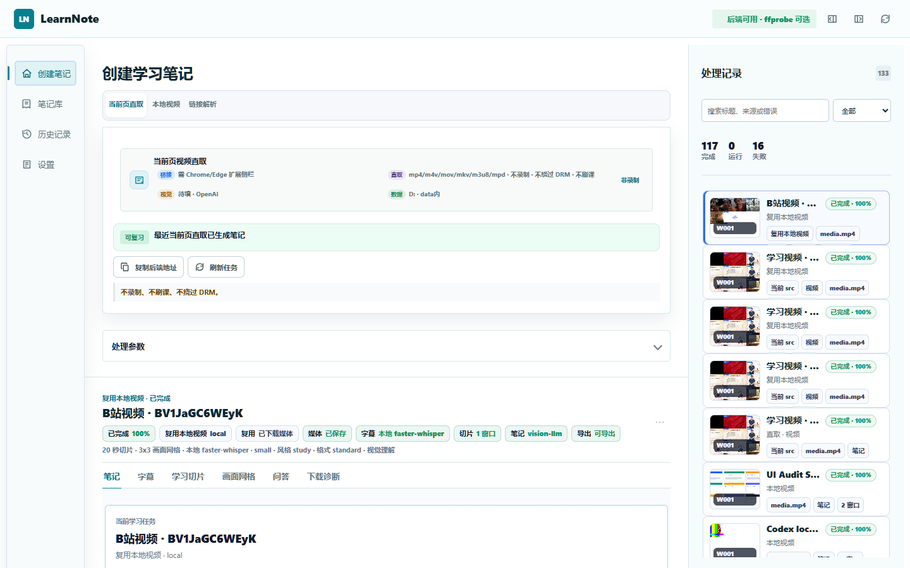
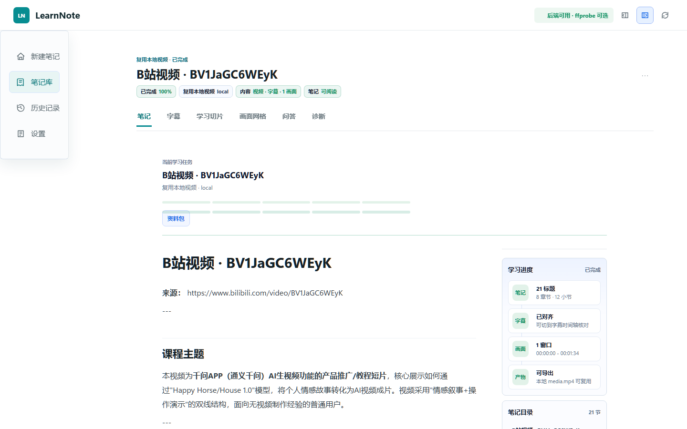

打开视频
网页视频用浏览器扩展发送，本地视频直接拖入客户端。
打开正在播放的课程，或拖入本地视频。LearnNote 自动整理字幕、关键画面和知识结构。

网页视频用浏览器扩展发送，本地视频直接拖入客户端。
选择学习目的，其余交给 LearnNote 自动完成。
沿时间轴核对原话与画面，再导出自己的复习资料。
不需要理解复杂参数。选择你现在要做的事，笔记结构会自动调整。
概念、解释、案例、易错点和复习问题。
压缩成结论、要点和关键时间点。
考点、记忆线索、易混内容与自测题。
导入自己的结构，让每次笔记保持一致。
字幕帮你找到原话，画面帮你还原过程，结构化笔记帮你真正理解。

三种方式，随时导入，马上生成结构化笔记。
在课程或视频页面，直接整理正在观看的内容。
拖入已有视频文件，快速生成字幕与笔记。
粘贴支持的网站链接，自动获取并开始整理。
视频、字幕和笔记保存在你选择的文件夹。需要更深入的画面理解时，再连接自己的 AI 服务。
选择任意非系统盘文件夹，也能把已有任务一起迁移过去。
需要图文理解时，再选择并连接适合自己的模型。
每一步都有进度和结果，下载、切片与总结一目了然。
先安装 Windows 客户端。需要整理网页视频时，再安装浏览器扩展。